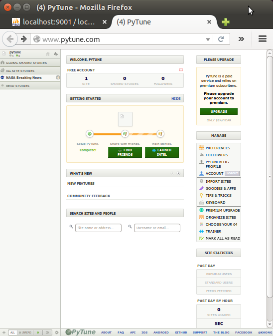

Deploy Django production app (pytune.com) using Nginx and uWSGI
We'll deploy Django app (pytune.com) to AWS (we need at least t2-small (2GB of memory) instance using Nginx and uWSGI on Ubuntu 16.04.
Initially, it's been deployed on Ubuntu 14.04, in this article, we'll work on Ubuntu 16.04. However, I have some issues regarding systemd with uwsgi protocol. So, this time, we'll use http protocol via uwsgi, which may not be a right way of using 'uwsgi'.
Let's start by updating the list:
$ sudo apt-get update
First, we need to create a folder where we can place our code:
$ sudo mkdir -p /var/www/django/ $ cd /var/www/django
Let's clone our repo:
$ sudo apt-get install git $ sudo git clone https://github.com/Einsteinish/PyTune.git $ cd PyTune $ ls api docker flask local_settings.py.template node README.md templates apps docker-compose.yml __init__.py logs pytune-app.ini requirements.txt urls.py wsgi.py assets.yml documents LICENSE.md manage.py pytune-app.sock settings.py utils config fabfile.py local_settings.py media r sitecustomize.py vendor
We'll install the necessary package in later section of this tutorial.
Install Nginx:
$ sudo apt-get install nginx
Let's create a new file /etc/nginx/sites-available/pytune.com.conf:
server {
listen 80;
server_name pytune.com www.pytune.com;
location / {
include uwsgi_params;
uwsgi_pass unix:/var/www/django/PyTune/pytune-app.sock;
}
}
Enable the server configuration we just made by linking it to the sites-enabled directory:
$ sudo ln -s /etc/nginx/sites-available/pytune.com.conf /etc/nginx/sites-enabled
Check the configuration file for any syntax errors:
$ sudo service nginx configtest * Testing nginx configuration
If it reports back that no problems were detected, restart the server to implement new changes:
$ sudo service nginx restart
First, we need to install uWSGI into our project directory:
(venv) $ sudo pip install uwsgi
We can quickly test our application server by passing it the information by typing:
(venv) k@laptop:~/MySites/PyTune2$ uwsgi --http :8080 --home /home/k/MySites/PyTune2/venv --chdir /home/k/MySites/PyTune2 -w wsgi *** Starting uWSGI 2.0.14 (64bit) ... current working directory: /home/k/MySites/PyTune2 detected binary path: /home/k/MySites/PyTune2/venv/bin/uwsgi ... chdir() to /home/k/MySites/PyTune2 *** WARNING: you are running uWSGI without its master process manager *** your processes number limit is 13817 your memory page size is 4096 bytes detected max file descriptor number: 1024 lock engine: pthread robust mutexes thunder lock: disabled (you can enable it with --thunder-lock) uWSGI http bound on :8080 fd 4 spawned uWSGI http 1 (pid: 28243) uwsgi socket 0 bound to TCP address 127.0.0.1:34770 (port auto-assigned) fd 3 Python version: 2.7.12 (default, Jul 1 2016, 15:12:24) [GCC 5.4.0 20160609] Set PythonHome to /home/k/MySites/PyTune2/venv *** Python threads support is disabled. You can enable it with --enable-threads *** Python main interpreter initialized at 0x1524dc0 your server socket listen backlog is limited to 100 connections your mercy for graceful operations on workers is 60 seconds mapped 72768 bytes (71 KB) for 1 cores *** Operational MODE: single process *** [Nov 15 21:52:17] ---> Couldn't find spam.py. WSGI app 0 (mountpoint='') ready in 8 seconds on interpreter 0x1524dc0 pid: 28242 (default app) *** uWSGI is running in multiple interpreter mode *** spawned uWSGI worker 1 (and the only) (pid: 28242, cores: 1)
Here, we've told uWSGI to use our virtual environment located in our ~/MySites/PyTune2 directory, to use the wsgi.py file. For our demonstration, we told uWSGI to serve HTTP on port 8080. However, later, we'll use a socket which uses uWSGI's uwsgi protocol instead of HTTP.
With the command, now we can type in our browser, domain:8080, then we will see our site.
While running uWSGI from the command line is useful for testing, For an actual deployment, we will run uWSGI with given a configuration file.
Let's make uWSGI config file (pytune-app.ini) which creates isolated environments, each running their own versions of packages.
It should begin with the [uwsgi] section header. All of our information will go after this header. We'll use variables to make our configuration file more reusable. So, after the header, set a variable called uid which holds sudo username.
[uwsgi] uid = k module = wsgi:application master = true processes = 5 socket = pytune-app.sock chown-socket = %(uid):www-data chmod-socket = 664 vacuum = true home = /home/k/MySites/PyTune2/venv die-on-term = true
We also set the virtual environment for our project.
By setting the module, we can indicate exactly how to interface with our project (by importing the "application" callable from the wsgi.py file within our project directory).
Next we need to specify how uWSGI should listen for connections (socketsocket which is more secure and offers better performance. This socket will not use HTTP, but instead will implement uWSGI's uwsgi protocol, which is a fast binary protocol for designed for communicating with other servers.
We also modified the ownership and permissions of the socket because we will be giving the web server write access.
We'll set the vacuum option so that the socket file will be automatically cleaned up when the service is stopped.
We can use the ini configuration file by the following command:
$ sudo uwsgi --ini pytune-app.ini --uid k --gid www-data ... *** uWSGI is running in multiple interpreter mode *** spawned uWSGI master process (pid: 2989) spawned uWSGI worker 1 (pid: 2990, cores: 1) spawned uWSGI worker 2 (pid: 2991, cores: 1) spawned uWSGI worker 3 (pid: 2992, cores: 1) spawned uWSGI worker 4 (pid: 2993, cores: 1) spawned uWSGI worker 5 (pid: 2994, cores: 1)
For more information about the ini file, please visit How to use Django with uWSGI.
While the uWSGI workers are there, let's see what's new in our project directory:
$ ls -la /var/www/django/pytune ... -rw-r--r-- 1 root root 142 May 27 03:35 pytune-app.ini srw-rw-r-- 1 root root 0 May 27 03:49 pytune-app.sock ...
For Ubuntu > 15, we need to use systemd instead of upstart. So, skip this section.
As shown above, we can run it interactively. However, we want to launch the uWSGI instance at boot so that our application is always available (/etc/init/pytune-app.conf):
description "uWSGI instance to serve pytune4-app"
start on runlevel [2345]
stop on runlevel [!2345]
setuid root
setgid www-data
script
cd /var/www/django/PyTune
. venv/bin/activate
uwsgi --ini pytune-app.ini
end script
Now that our Upstart script is complete, we can start the service:
(venv)$ sudo start pytune-app $ ps -ef|grep pytune-app root 13238 13234 8 16:07 ? 00:00:01 uwsgi --ini pytune-app.ini root 13239 13238 0 16:07 ? 00:00:00 uwsgi --ini pytune-app.ini root 13240 13238 0 16:07 ? 00:00:00 uwsgi --ini pytune-app.ini root 13241 13238 0 16:07 ? 00:00:00 uwsgi --ini pytune-app.ini root 13242 13238 0 16:07 ? 00:00:00 uwsgi --ini pytune-app.ini root 13243 13238 0 16:07 ? 00:00:00 uwsgi --ini pytune-app.ini
The app will start automatically on boot.
We can stop the service at any time by typing:
(venv)$ sudo stop pytune-app
Ubuntu switched to systemd as its service framework starting from 15.04. The recommended practice is to change upstart jobs to systemd jobs while we can switch back to upstart if we want to.
Ref: https://wiki.ubuntu.com/SystemdForUpstartUsers
Our systemd unit file (/etc/systemd/system/pytune-uwsgi.service) looks like this:
[Unit] Description=uWSGI instance to serve pytune-app [Service] User=root Group=www-data WorkingDirectory=/home/k/MySites/PyTune2 ExecStartPre=/bin/bash -c '. venv/bin/activate' ExecStart=/home/k/.local/bin/uwsgi --ini /home/k/MySites/PyTune2/pytune-app.ini Restart=always KillSignal=SIGQUIT Type=notify NotifyAccess=all [Install] WantedBy=multi-user.target
$ sudo systemctl start pytune-uwsgi k@laptop:/etc/systemd/system$ ps -ef|grep sgi root 11039 1 35 16:00 ? 00:00:06 /home/k/.local/bin/uwsgi --ini /home/k/MySites/PyTune2/pytune-app.ini root 11047 11039 0 16:00 ? 00:00:00 /home/k/.local/bin/uwsgi --ini /home/k/MySites/PyTune2/pytune-app.ini root 11048 11039 0 16:00 ? 00:00:00 /home/k/.local/bin/uwsgi --ini /home/k/MySites/PyTune2/pytune-app.ini root 11049 11039 0 16:00 ? 00:00:00 /home/k/.local/bin/uwsgi --ini /home/k/MySites/PyTune2/pytune-app.ini root 11050 11039 0 16:00 ? 00:00:00 /home/k/.local/bin/uwsgi --ini /home/k/MySites/PyTune2/pytune-app.ini root 11051 11039 0 16:00 ? 00:00:00 /home/k/.local/bin/uwsgi --ini /home/k/MySites/PyTune2/pytune-app.ini
We can enable systemd unit file to automatically start uWSGI at boot.
$ sudo systemctl enable pytune-uwsgi Created symlink from /etc/systemd/system/multi-user.target.wants/pytune-uwsgi.service to /etc/systemd/system/pytune-uwsgi.service.
Install Java for elasticsearch:
$ sudo apt-add-repository ppa:webupd8team/java $ sudo apt-get update $ sudo apt-get install oracle-java8-installer $ javac -version javac 1.8.0_91
Official guide : Install Elasticsearch.
Download:
$ wget https://download.elastic.co/elasticsearch/elasticsearch/elasticsearch-1.7.2.deb
Then install it with the dpkg command like this:
$ sudo dpkg -i elasticsearch-1.7.2.deb
This will install Elasticsearch in /usr/share/elasticsearch/:
$ ls /usr/share/elasticsearch/ bin lib NOTICE.txt plugins README.textile
Its configuration files placed in /etc/elasticsearch:
$ ls /etc/elasticsearch elasticsearch.yml logging.yml
The init script of elasticsearch is added in /etc/init.d/elasticsearch:
$ ls /etc/init.d/elasticsearch /etc/init.d/elasticsearch
To make sure Elasticsearch starts and stops automatically, we should add its init script to the default runlevels with the command:
$ sudo update-rc.d elasticsearch defaults Adding system startup for /etc/init.d/elasticsearch ... /etc/rc0.d/K20elasticsearch -> ../init.d/elasticsearch ... /etc/rc5.d/S20elasticsearch -> ../init.d/elasticsearch
We wont't touch anything and use the default settings.
Now, we can start Elasticsearch for the first time with the command:
$ sudo service elasticsearch start
Testing:
$ curl -X GET 'http://localhost:9200'
We should get the following response something like this:
$ curl -X GET 'http://127.0.0.1:9200'
{
"status" : 200,
"name" : "Unuscione",
"cluster_name" : "elasticsearch",
"version" : {
"number" : "1.7.2",
"build_hash" : "e43676b1385b8125d647f593f7202acbd816e8ec",
"build_timestamp" : "2015-09-14T09:49:53Z",
"build_snapshot" : false,
"lucene_version" : "4.10.4"
},
"tagline" : "You Know, for Search"
}
Or we can check the health of the cluster:
$ curl -XGET http://localhost:9200/_cluster/health?pretty
{
"cluster_name" : "elasticsearch",
"status" : "green",
"timed_out" : false,
"number_of_nodes" : 1,
"number_of_data_nodes" : 1,
"active_primary_shards" : 0,
"active_shards" : 0,
"relocating_shards" : 0,
"initializing_shards" : 0,
"unassigned_shards" : 0,
"delayed_unassigned_shards" : 0,
"number_of_pending_tasks" : 0,
"number_of_in_flight_fetch" : 0
}
$ sudo apt-get install mysql-server
MySQL will bind to localhost (127.0.0.1) by default.
Check if it's running:
$ ps -ef|grep mysqld mysql 18570 1 0 18:32 ? 00:00:00 /usr/sbin/mysqld $ service mysql status mysql start/running, process 18570
If it is not running, we can start it with:
$ sudo service mysql start
Run the mysql_secure_installation script to address several security concerns in a default MySQL installation:
$ sudo mysql_secure_installation
Answer 'y' to all questions.
To log in to MySQL as the root user:
$ mysql -u root -p Enter password: ... mysql>
Here is how we create a user and database:
(venv)$ mysql -u root -p mysql> CREATE DATABASE pytunedb; mysql> CREATE USER 'pytune'@'localhost' IDENTIFIED BY 'password'; mysql> GRANT ALL PRIVILEGES ON * . * TO 'pytune'@'localhost'; mysql> Flush Privileges;
Install php:
$ sudo apt-get install php5-fpm php5-mysql php5-cli
For security reason, in /etc/php5/fpm/php.ini, we need to set:
cgi.fix_pathinfo=0
Restart our PHP processor by typing:
$ sudo service php5-fpm restart
Modify the default config file for Nginx (/etc/nginx/sites-available) as below:
server {
listen 80 default_server;
listen [::]:80 default_server ipv6only=on;
root /usr/share/nginx/html;
index index.php index.html index.htm;
server_name server_domain_name_or_IP;
location / {
try_files $uri $uri/ =404;
}
error_page 404 /404.html;
error_page 500 502 503 504 /50x.html;
location = /50x.html {
root /usr/share/nginx/html;
}
location ~ \.php$ {
try_files $uri =404;
fastcgi_split_path_info ^(.+\.php)(/.+)$;
fastcgi_pass unix:/var/run/php5-fpm.sock;
fastcgi_index index.php;
fastcgi_param SCRIPT_FILENAME $document_root$fastcgi_script_name;
include fastcgi_params;
}
}
Just for a typical test, let's create a php info file (/usr/share/nginx/html/info.php):
<?php phpinfo(); ?>
Restart Nginx and and visit a browser with:
http://server_domain_name_or_IP/info.php
Now, we're ready to move on.
Install phpmyadmin:
$ sudo apt-get install phpmyadmin
Hit TAB to bypass for web server since Nginx is not listed. Then, select "Yes" dbconfig-common to configure a database for phpmyadmin to use. Provide the passwords for MySQL/admin.
For the Nginx web server to find and serve the phpMyAdmin files correctly, we just need to create a symbolic link from the installation files to our Nginx document root directory by typing this:
$ sudo ln -s /usr/share/phpmyadmin /usr/share/nginx/html
The last thing we need to do is enabling the mcrypt PHP module, which phpMyAdmin relies on. This was installed with phpMyAdmin so we just need to turn it on and restart our PHP processor:
$ sudo php5enmod mcrypt $ sudo service php5-fpm restart
We want to access it from our local machine via ssh local port forwarding:
$ ssh -i ~/.ssh/bogo.pem -L 9001:localhost:80 -l ubuntu 52.9.222.239
So, we can use local port 9001 and access remote 80 on AWS via ssh.
The guide for installing mongodb can be found Install MongoDB Community Edition on Ubuntu.
$ sudo apt-key adv --keyserver hkp://keyserver.ubuntu.com:80 --recv EA312927 $ echo "deb http://repo.mongodb.org/apt/ubuntu trusty/mongodb-org/3.2 multiverse" | sudo tee /etc/apt/sources.list.d/mongodb-org-3.2.list $ sudo apt-get update $ sudo apt-get install -y mongodb-org $ mongod -version db version v3.2.6
To start it:
$ sudo service mongod start $ sudo service mongod status mongod start/running, process 20293
Verify that the mongod process has started successfully by checking the contents of the log file at /var/log/mongodb/mongod.log for a line reading:
[initandlisten] waiting for connections on port <port>
where <port> is the port configured in /etc/mongod.conf, 27017 by default.
Note: we may want to setup one more thing.
MongoDB setting in /var/www/django/PyTune/settings.py:
MONGO_DB = {
'host': 'localhost:27017',
Redis is an open source (BSD licensed), in-memory data structure store, used as database, cache and message broker.
$ sudo apt-get install redis-server
By default, the redis-server is started after installation.
We can check using the service command :
$ sudo service redis-server status redis-server is running $ pgrep redis-server 1815
Redis configuration is located in the /etc/redis/redis.conf file. In our case, Redis listens only on localhost. However, if we have a dedicated redis server and we're connecting from other servers, such as an application server, we may want to change Redis configuration directive so that it will listen to all network interfaces instead of only on localhost.
Virtualenv is to create isolated environments, each running their own versions of packages. It is the tool in Python which helps in creating new virtual environments for our projects. Since it has its own install directories, we can be isolated from the system directories.
Note: though I chose /var/..., we may want to work in a directory that we have a write permission.
We need pip, so let's install it first:
$ sudo apt-get -y install python-pip
To install virtualenv, we do:
$ cd /var/www/django/PyTune /var/www/django/PyTune$ sudo pip install virtualenv /var/www/django/PyTune$ sudo virtualenv venv
To activate:
$ source venv/bin/activate
We may want to upgrade the pip:
(venv)$ pip install --upgrade pip
Otherwise, we may get the following error:
raise TypeError("buf must be a byte string")
TypeError: buf must be a byte string
While we're trying to install our packages via pip, we may get several errors as shown later in this section.
Here is the list of libraries that needs to be install before installing our packages:
$ sudo pip install libpq-dev python-dev libmysqlclient-dev libxml2-dev libxslt-dev lib32z1-dev libjpeg-dev libncurses5-dev libffi-dev
So, if we want to avoid hassle, we may want the libraries to be pre-installed.
Now, let's install our assorted packages:
(venv)$ sudo pip install -r requirements.txt
We may get an error for scipy. In that case:
$ sudo apt-get install libpq-dev python-dev (venv)$ pip install -r requirements.txt
If there is an error : "mysql_config not found", do the following:
$ sudo apt-get install libmysqlclient-dev
To fix the error : libxml/xmlversion.h: No such file or directory:
$ sudo apt-get install libxml2-dev libxslt-dev lib32z1-dev
We may get "lxml installation error" during compilation. This is a memory issue. So, switch instance type to the one that has more memory.
For the error during Pillow such as "ValueError: jpeg is required ...", we should do:
$ sudo apt-get install libjpeg-dev
If we get "usr/bin/ld: cannot find -lncurses" error, install the library, ncurses:
$ sudo apt-get install libncurses5-dev
For cryptography:
$ sudo apt-get install libffi-dev
We may also need to install the following packages as well:
(venv)$ pip install urllib3 (venv)$ pip install pyopenssl (venv)$ pip install python-oauthlib (venv)$ pip install scipy
We need two files for settings: settings.py and local_settings.py, especially, for the following items:
PYTUNE_URL = 'pytune.com' SESSION_COOKIE_DOMAIN = '.pytune.com'
and we need to match SITE_ID with the django_site table:
SITE_ID = 1
Set permissions for media and logs directories:
$ sudo chown -R www-data:www-data media sudo chown -R www-data:www-data logs
File permission change:
(venv)$ sudo chmod u+x manage.py
(venv)$ sudo ./manage.py syncdb You just installed Django's auth system, which means you don't have any superusers defined. Would you like to create one now? (yes/no): No ...
(venv)$ sudo ./manage.py migrate --fake (venv)$ sudo ./manage.py migrate (venv)$ sudo ./manage.py loaddata config/fixtures/bootstrap.json
Here are the tables created:
Make sure the instance have a dedicated Elastic IP. In this case, it's 52.9.222.239.
Here is a newly created Hosted Zone with a domain name pytune.com in AWS Route 53:

Since the registrar for pytune.com is GoDaddy, we need to tell GoDaddy what're the name servers as below:
Also, a Zone File of GoDaddy should point to the AWS instance:
Now, back to AWS Route 53 and create Record Set.
A record for www.pytune.com:

Then Alias to www.pytune.com:

We also want to set CNAME:
Here is the final result for Route 53 setup:
As discussed earlier, we can run the app using interactive uWSGI:
$ sudo uwsgi --ini pytune-app.ini --uid root --gid www-data
However, for production app, we want to run it as a daemon service:
(venv)$ sudo start pytune-app (venv)$ ps aux|grep pytune|grep -v grep root 7822 0.1 3.9 66072 20000 ? S 07:31 0:00 uwsgi --ini pytune-app.ini root 7823 0.0 3.1 66072 15708 ? S 07:31 0:00 uwsgi --ini pytune-app.ini root 7824 0.0 3.1 66072 15708 ? S 07:31 0:00 uwsgi --ini pytune-app.ini root 7825 0.0 3.1 66072 15708 ? S 07:31 0:00 uwsgi --ini pytune-app.ini root 7826 0.0 3.1 66072 15708 ? S 07:31 0:00 uwsgi --ini pytune-app.ini root 7827 0.0 3.1 66072 15704 ? S 07:31 0:00 uwsgi --ini pytune-app.ini


There are things that can go wrong.
- 502 Bad Gateway: Nginx on but uWSGI failed to run.
When DEBUG turned off, Raven kicks in while the Sentry not being setup properly. So, we may get SENTRY_DSN error. So, the lines in settings.py commented out:''' if not DEBUG: INSTALLED_APPS += ( 'raven.contrib.django', 'django_ses', ) # RAVEN_CLIENT = raven.Client(dsn=SENTRY_DSN, release=raven.fetch_git_sha(os.path.dirname(__file__))) #RAVEN_CLIENT = raven.Client(SENTRY_DSN) ''' - Permission error : when we run uWSGI in interactive mode, we may get permission error for /var/www/django/PyTune/pytune-app.sock. So, we need to run it with --uid root --gid www-data:
$ sudo uwsgi --ini pytune-app.ini --uid root --gid www-data
Three things should be done to activate sub-domains:
- Route 53 CNAME *.pytune.com.
- uWSGI ini file setup.
- Nginx configuration.
To set sub-domain at Route 53, we need to create a CNAME. Actually, we've already done it when we created a CNAME with *.pytune.com:

/etc/init/dev-pytune-app.conf
description "uWSGI instance to serve pytune-app"
start on runlevel [2345]
stop on runlevel [!2345]
setuid root
setgid www-data
script
cd /var/www/django/dev-PyTune
. venv/bin/activate
uwsgi --ini dev-pytune-app.ini
end script
/var/www/django/dev-PyTune/dev-pytune-app.ini:
[uwsgi] module = wsgi:application master = true processes = 5 socket = dev-pytune-app.sock chmod-socket = 664 vacuum = true die-on-term = true
Lastly, Nginx setup.
/etc/nginx/sites-available/dev-pytune.com.conf:
server {
listen 80;
server_name dev.pytune.com;
location / {
include uwsgi_params;
uwsgi_pass unix:/var/www/django/dev-PyTune/dev-pytune-app.sock;
}
}
Make a link for the dev:
$ sudo ln -s /etc/nginx/sites-available/dev-pytune.com.conf /etc/nginx/sites-enabled/dev-pytune.com.conf $ ls -la ../sites-enabled/ lrwxrwxrwx 1 root root 34 May 27 03:27 default -> /etc/nginx/sites-available/default lrwxrwxrwx 1 root root 46 May 27 19:55 dev-pytune.com.conf -> /etc/nginx/sites-available/dev-pytune.com.conf lrwxrwxrwx 1 root root 42 May 27 03:28 pytune.com.conf -> /etc/nginx/sites-available/pytune.com.conf
Now everything is ready:
Restart Nginx:
$ sudo service nginx restart
We can run the uWSGI ini file like this:
(venv)$ sudo start dev-pytune-app root 2906 5.2 1.9 66068 20004 ? S 20:05 0:00 uwsgi --ini dev-pytune-app.ini root 2907 0.0 1.5 66068 15684 ? S 20:05 0:00 uwsgi --ini dev-pytune-app.ini root 2908 0.0 1.5 66068 15684 ? S 20:05 0:00 uwsgi --ini dev-pytune-app.ini root 2909 0.0 1.5 66068 15684 ? S 20:05 0:00 uwsgi --ini dev-pytune-app.ini root 2910 0.0 1.5 66068 15684 ? S 20:05 0:00 uwsgi --ini dev-pytune-app.ini root 2911 0.0 1.5 66068 15684 ? S 20:05 0:00 uwsgi --ini dev-pytune-app.ini
Note : put dev on another AWS instance.
Actually, I moved the files to home directory from /var/www.
Here are the core files.
/home/ubuntu/MySites/PyTune2/pytune-app.ini:
[uwsgi] module = wsgi:application master = true processes = 5 socket = pytune-app.sock chmod-socket = 664 vacuum = true die-on-term = true
/etc/init/pytune-app.conf:
description "uWSGI instance to serve pytune4-app"
start on runlevel [2345]
stop on runlevel [!2345]
setuid root
setgid www-data
script
#cd /var/www/django/PyTune
cd /home/ubuntu/MySites/PyTune2
. venv/bin/activate
uwsgi --ini pytune-app.ini
end script
/etc/nginx/sites-available/pytune.com.conf:
server {
listen 80;
server_name pytune.com www.pytune.com;
location / {
include uwsgi_params;
#uwsgi_pass unix:/var/www/django/PyTune/pytune-app.sock;
uwsgi_pass unix:/home/ubuntu/MySites/PyTune2/pytune-app.sock;
}
}
Just for records, here are the the project home directory structure:
ubuntu@ip-172-31-11-56:/vol1/MySites/PyTune2$ ls -la total 252 drwxr-xr-x 16 ubuntu ubuntu 4096 Nov 15 05:07 . drwxr-xr-x 7 ubuntu ubuntu 4096 Nov 13 05:02 .. drwxrwxr-x 2 ubuntu ubuntu 4096 Sep 4 18:52 api drwxrwxr-x 18 ubuntu ubuntu 4096 Sep 5 03:34 apps -rw-rw-r-- 1 ubuntu ubuntu 5449 Sep 4 18:52 assets.yml drwxrwxr-x 4 ubuntu ubuntu 4096 Sep 4 18:52 config drwxrwxr-x 2 ubuntu ubuntu 4096 Sep 4 18:52 docker -rw-rw-r-- 1 ubuntu ubuntu 493 Sep 4 18:52 docker-compose.yml drwxrwxr-x 2 ubuntu ubuntu 4096 Sep 4 18:52 documents -rw-rw-r-- 1 ubuntu ubuntu 61468 Sep 4 18:52 fabfile.py drwxrwxr-x 2 ubuntu ubuntu 4096 Sep 4 18:52 flask -rw-rw-r-- 1 ubuntu ubuntu 0 Sep 4 18:52 __init__.py -rw-rw-r-- 1 ubuntu ubuntu 1111 Sep 4 18:52 LICENSE.md -rw-rw-r-- 1 ubuntu ubuntu 3354 Sep 4 18:52 local_settings.py -rw-r--r-- 1 root www-data 2850 Sep 5 03:34 local_settings.pyc -rw-rw-r-- 1 ubuntu ubuntu 3089 Sep 4 18:52 local_settings.py.template drwxrwxr-x 2 www-data www-data 4096 Sep 4 18:52 logs -rwxrwxr-x 1 ubuntu ubuntu 243 Sep 4 18:52 manage.py drwxrwxr-x 10 www-data www-data 4096 Sep 4 18:52 media drwxrwxr-x 3 ubuntu ubuntu 4096 Sep 4 18:52 node -rw-rw-r-- 1 ubuntu ubuntu 142 Sep 4 18:52 pytune-app.ini drwxrwxr-x 2 ubuntu ubuntu 4096 Sep 4 18:52 r -rw-rw-r-- 1 ubuntu ubuntu 15105 Sep 4 18:52 README.md -rw-rw-r-- 1 ubuntu ubuntu 1002 Sep 4 18:52 requirements.txt -rw-rw-r-- 1 ubuntu ubuntu 20507 Sep 4 18:52 settings.py -rw-r--r-- 1 root www-data 16683 Sep 5 03:34 settings.pyc -rw-rw-r-- 1 ubuntu ubuntu 123 Sep 4 18:52 sitecustomize.py drwxrwxr-x 15 ubuntu ubuntu 4096 Sep 4 18:52 templates -rw-rw-r-- 1 ubuntu ubuntu 4205 Sep 4 18:52 urls.py -rw-r--r-- 1 root www-data 3802 Sep 5 05:36 urls.pyc drwxrwxr-x 6 ubuntu ubuntu 4096 Sep 5 05:36 utils drwxrwxr-x 19 ubuntu ubuntu 4096 Sep 5 03:34 vendor drwxrwxr-x 7 ubuntu ubuntu 4096 Sep 4 18:52 venv -rw-rw-r-- 1 ubuntu ubuntu 380 Sep 4 18:52 wsgi.py -rw-r--r-- 1 root www-data 549 Sep 4 20:27 wsgi.pyc
Got the following error when I try to run "uwsgi":
$ uwsgi --ini pytune-app.ini ... current working directory: /home/k/MySites/PyTune2 detected binary path: /home/k/.local/bin/uwsgi !!! no internal routing support, rebuild with pcre support !!!
Fix should be like this:
$ sudo pip uninstall uwsgi $ sudo apt-get install libpcre3 libpcre3-dev $ sudo pip install uwsgi Collecting uwsgi Installing collected packages: uwsgi Successfully installed uwsgi-2.0.14 $ which uwsgi /usr/local/bin/uwsgi
Another error on Ubuntu 16.04 with python 2.7.12:
$ uwsgi --http-socket :8888 --home /vol1/MySites/PyTune3/venv --chdir /vol1/MySites/PyTune3 -w wsgi ... File "/usr/lib/python2.7/hashlib.py", line 138, in_hashlib.openssl_md_meth_names) AttributeError: 'module' object has no attribute 'openssl_md_meth_names' unable to load app 0 (mountpoint='') (callable not found or import error) ...
To fix we need to delete the static hashlib:
$ sudo rm /usr/lib/python2.7/lib-dynload/_hashlib.x86_64-linux-gnu.so
$ uwsgi --http :8787 --home /vol1/MySites/PyTune3/venv --chdir /vol1/MySites/PyTune3 -w wsgi
Nginx configuration file (/etc/nginx/sites-available/pytune.com.conf):
server {
listen 80;
server_name pytune.com www.pytune.com;
location / {
proxy_pass http://127.0.0.1:8787;
}
}
Rather than using a command line, we may want to run the "uwsgi" via pm2:
$ sudo npm install -g pm2 $ pm2 start wsgi-run.sh
where the wsgi-run.sh looks like this:
#!/bin/bash uwsgi --http-socket :8787 --home /vol1/MySites/PyTune3/venv --chdir /vol1/MySites/PyTune3 -w wsgi
Ph.D. / Golden Gate Ave, San Francisco / Seoul National Univ / Carnegie Mellon / UC Berkeley / DevOps / Deep Learning / Visualization